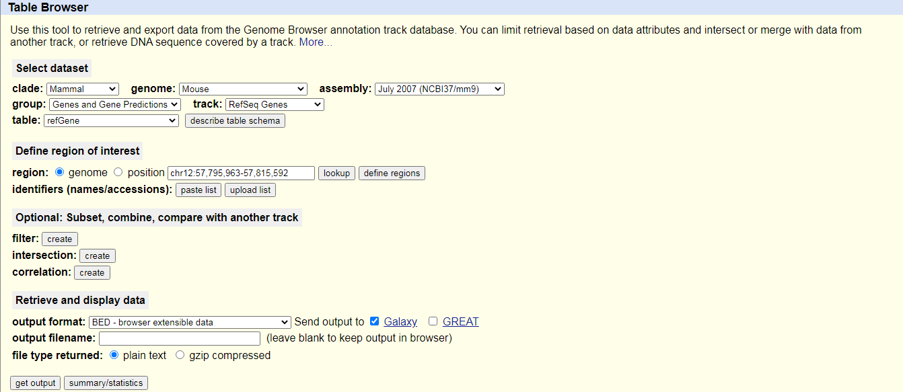
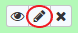
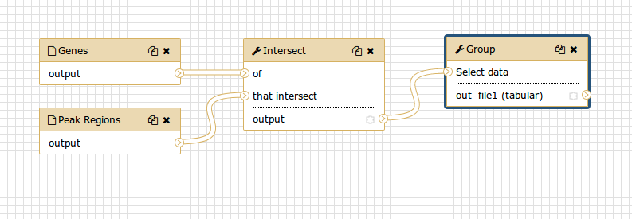

From peaks to genes
Overview
Questions
- How to use Galaxy?
- How to get from peak regions to a list of gene names?
Objectives
- Familiarize yourself with the basics of Galaxy
- Learn how to obtain data from external sources
- Learn how to run tools
- Learn how histories work
- Learn how to create a workflow
- Learn how to share your work
Time estimation: 3h
Introduction
We stumbled upon a paper Li et al., Cell Stem Cell 2012 that contains the analysis of possible target genes of an interesting protein in mice. The targets were obtained by ChIP-seq and the raw data is available through GEO. The list of genes however is neither in the supplement of the paper nor part of the GEO submission. The closest thing we can find is a list of the regions where the signal is significantly enriched (so called peaks). The goal of this exercise is to turn this list of genomic regions into a list of possible target genes.
Agenda
In this tutorial, we will deal with:
Pretreatments
Browse to your Galaxy instance and log in or register. The Galaxy interface consist of three main parts. The available tools are listed on the left, your analysis history is recorded on the right, and the middle pane will show the tools and datasets.

Let’s start with a fresh history.
Hands-on: Create history
Make sure you have an empty analysis history.
Starting a new history
- Click the Gear icon at the top of the history panel
- Select the option Create New from the menu
Rename your history to make it easy to recognize. You can do this by clicking on the title of the history (by default the title is Unnamed history) and typing Galaxy Introduction as the name.

Data upload
Download the list of peak regions (the file GSE37268_mof3.out.hpeak.txt.gz) from
GEO to your
computer and upload it to Galaxy.
Click on the upload button in the upper left ot the interface.
Press Choose local file and search for your file.
As Type select
interval.Press Start and wait for the upload to finish. Galaxy will automatically unpack the file.
Comment
After this you will see your first history item in Galaxy’s right pane. It will go through the gray (preparing/queued) and yellow (running) states to become green (success):
- Copy the link location
- Open the Galaxy Upload Manager
- Select Paste/Fetch Data
- Paste the link into the text field
- Press Start
- Click on the pencil button displayed in your dataset in the history
- Choose Datatype on the top
- Select
intervalin this case- Press Save
As default, Galaxy takes the link as name. It also doesn’t link the dataset to a database or a reference genome.
- Edit the “Database/Build” to select “mm9”, the database build for mice used in the paper
- Rename the datasets according to the samples


In order to find the related genes to these peak regions, we also need a list of genes in mice, which we can obtain from UCSC.
In the tool menu, navigate to
Get Data -> UCSC Main - table browser
You will be taken to the UCSC table browser, which looks something like this:

- clade should be set to
Mammal- genome should be set to
Mouse- assembly should be set to
July 2007 (NCBI37/mm9)- group should be set to
Genes and Gene Predictions- track should be set to
RefSeq Genes- table should be
refGene- region should be
genome- output format should be set to
BED - browser extensible data- Send output to should have the option
GalaxycheckedClick on the get output button and you will see the next screen:
Make sure that Create one BED record per is set to
Whole Geneand click on the Send Query to Galaxy button.Let’s rename our dataset to something more recognizable.
- Click on the pencil icon to edit a file’s attributes. 
- In the next screen change the name of the dataset to
Genes.- Click the Save button at the bottom of the screen.
The BED - Browser Extensible Data format provides a flexible way to encode gene regions. BED lines have three required fields:
- chromosome ID - start position (0-based) - end position (end-exclusive)There can be up to and nine additional optional fields, but the number of fields per line must be consistent throughout any single set of data.
You can find more information about it at UCSC including a description of the optional fields.


Now we collected all the data we need to start our analysis.
Part 1: Naive approach
File preperation
Let’s have a look at our files to see what we actually have here.
To view the contents of the file, click on the eye icon. For our peak file, it should look something like this:
While the regions of the genes from UCSC look slightly different:
Questions
While the file from UCSC has labels for the columns, the peak file does not. Can you guess what the columns stand for?


This peak file is not in any standard format and just by looking at it, we cannot find out what the numbers in the different columns mean. In the paper the authors mention that they used the peak caller HPeak. By looking at the HPeak manual we can find out that the columns contain the following information:
- chromosome name by number
- start coordinate
- end coordinate
- length
- location within the peak that has the highest hypothetical DNA fragment coverage (summit)
- not relevant
- not relevant
In order to compare the the two files, we have to make sure that the chromosome names follow the same format.
As we directly see, the peak file lacks chr before any chromosome number. But what happens with chromosome 20 and 21? Will it be X and Y instead? Let’s check:
- Select last
: Search for the Select last tool in the tool panel to the left and select the following settings:
- As Text file our peak file
GSE37268_mof3.out.hpeak.txt- Operation:
Keep last lines- Number of lines: Choose a value, e.g.
100- Click Execute
Wait for the job to finish and inspect the file through the eye icon.
Are the chromosomes 20 and 21 named X and Y?
Click to view answers
- Not at all. One more thing to fix.
In order to convert the chromosome names we have therefore two things to do:
- add
chr - change 20 and 21 to X and Y
- Replace Text
- As File to process our peak file
GSE37268_mof3.out.hpeak.txt- in column:
1- Find pattern:
[0-9]+(this will look for numerical digits)- Replace with:
chr&(&is a placeholder for the find result)- Click Execute
- Let’s rerun the tool for the final changes two times. You can shortcut this by pressing the rerun icon in the history, but don’t forget to adjust the settings:
- As File to process use the output from the last run, e.g. something like
Replace Text on data ...- in column:
1- Find pattern:
chr20- Replace with:
chrX- Rerun this tool accordingly for chromosome Y.
- Wait for the jobs to finish and inspect the latest file through the eye icon. Have we been successful?
We have quite some files now and should take care that we don’t loose track. Let’s rename our latest result to something more handy, e.g. Peak regions.
Analysis
Before we compare both region files we will add the promoter region to the gene records.
- Get Flanks
- As Select data use the file from UCSC
- Region:
Around Start- Location:
Upstream- Offset:
10000- Length:
12000
Compare the resulting BED file with the input. Look at the contents and compare the rows in the input to the rows in the output to find out how the start and end positions changed. Rename the dataset (by clicking on the pencil icon) to reflect your findings.
You might have noticed that the UCSC file is in BED format and has a database associated to it. That’s what we want for our peak file as well:
- Click on the pencil icon in the history entry of our peak region file:
- In the next screen select as Database/Build:
Mouse July 2007 (NCBI37/mm9) (mm9)- Click Save
- Click on the pencil icon again and switch to the
Convert Formattab- Select
Convert Genomic Intervals To BEDand press Convert
It’s time to find the overlapping intervals (finally!):
- Intersect
- Return:
Overlapping Intervals- of: the UCSC file with promoter regions
- that intersect: our converted peak region file
- for at least:
1
The order of the inputs is important! We want to end up with a list of genes, so the corresponding dataset needs to be the first input.
We do have a the list of genes (column 4 ) which correspond to the peak regions. To get a better overview of the genes we obtained, we want to look at their distribution across the different chromosomes.
- Group
- Select data: The result of the intersection
- Group by column:
Column 1- Press Insert Operation and choose:
- Type:
Count- On column:
Column 1
Which chromosome contained the highest number of target genes?
Click to view answers
- The result varies with different settings. If you followed step by step it should be chromosome 7 with 1671 genes.
Visualization
Since we have some nice data, let’s draw a barchart out of it!
- Charts : Select the Visualize icon at the latest history item and select
Charts- Choose a title at Provide a title, e.g.
Gene counts per chromosome- Switch to the Select data tab and play around with the settings
- Press Visualize and the top right to inspect your result
- Click on Editor and repeat with different settings
Extracting workflow
When you look carefully at your history, you can see that it contains all steps of our analysis, from the beginning to the end. By building this history we have actually built a complete record of our analysis with Galaxy preserving all parameter settings applied at every step. Wouldn’t it be nice to just convert this history into a workflow that we’ll be able to execute again and again?
Galaxy makes this very easy with the Extract workflow option. This means any time you want to build a workflow, you can just perform it manually once, and then convert it to a workflow, so that next time it will be a lot less work to do the same analysis. It also allows you to share or publish your analysis with ease.
Clean up your history. If you had any failed jobs (red), please remove those datasets from your history by clicking on the
xbutton. This will make the creation of a workflow easier.Go to the history Options menu (gear symbol) and select the
Extract Workflowoption.
The center pane will change and you will be able to choose which steps to include/exclude and how to name the newly created workflow.
- Uncheck any steps that shouldn’t be included in the workflow. Since we did some steps which where specific to our custom peak file, we might to exclude:
- all Replace Text steps
- Convert Genomic Intervals to strict BED
- Get flanks
Rename the workflow to something descriptive, for example
From peaks to genesClick on the Create Workflow button near the top.
You will get a message that the workflow was created. But where did it go?
- Click on Workflow in the top menu of Galaxy. Here you have a list of all your workflows.
Select the newly generated workflow and click on Edit. You should see something similar to this:
We can examine the workflow in Galaxy’s workflow editor. Here you can view/change the parameter settings of each step, add and remove tools, and connect an output from one tool to the input of another, all in an easy and graphical manner. You can also use this editor to build workflows from scratch.
- Although we have our two inputs in the workflow they are missing their connection to the first tool (Intersect), because we didn’t carry over some of the intermediate steps. Connect each input dataset to the Intersect tool by dragging the arrow pointing outwards on the right of its box (which denotes an output) to an arrow on the left of the Intersect box pointing inwards (which denotes an input). Connect each input dataset with a different input of Intersect.
- Rename the Input datasets: The upper one should be the
Reference regionsand the lower thePeak regions- Click on the gear icon at the top right and press Auto Re-layout to clean up our view: 
- Click on the gear icon at the top right and press Save to save your changes:
When a workflow is executed, the user is usually primarily interested in the final product and not in all intermediate steps. By default all the outputs of a workflow will be shown, but we can explicitly tell Galaxy which output to show and which to hide for a given workflow. This behaviour is controlled by the little asterisk next to every output dataset:
If you click on this asterisk for any of the output datasets, then only files with an asterisk will be shown, and all outputs without an asterisk will be hidden (Note that clicking all outputs has the same effect as clicking none of the outputs, in both cases all the datasets will be shown).


Now it’s time to reuse our workflow for a more sophisticated approach.
Part 2: More sophisticated approach
In part 1 we used an overlap definition of 1 bp (default setting). In order to get a more meaningful definition, we now want to use the information of the position of the peak summit and check for overlap of the summits with genes.
Preperation
Create a new history and name it. If you forgot how to do that, you can have a look at the beginning of this tutorial. The history is now empty, but we need our peak file again. Before we upload it twice we can copy it from our former history:
- Click on the View all histories icon at the top right of your history
- You should see both of your histories side-by-side now. Use drag-and-drop with your mouse to copy the edited peak file (after the replace steps) but still in interval format, which contains the summit information, to your new history.
- Press Done in the top left to go back to your analysis window
Create peak summit file
We need to generate a new BED file from the original peak file that contains the positions of the peak summits. The start of the summit is the start of the peak (column 2) plus the location within the peak that has the highest hypothetical DNA fragment coverage (column 5). As the end we simply define start + 1.
- Compute
- Add expression:
c2+c5- as a new column to: our peak file
- Round result?:
YES- Rerun this tool on the last result with:
- Add expression:
c8+1- as a new column to: the result from step 1
- Round result?:
YES
Now we cut out just the chromosome plus the start and end of the summit:
- Cut
- Cut columns:
c1,c8,c9- From: our latest history item
- The output from Cut will have the format
tabular. Change it tointervalsince that’s what the tool Intersect expects.
Get gene names
The RefSeq genes we downloaded from UCSC did only contain the RefSeq identifiers, but not the gene names. To get a list of gene names in the end, we use another BED file from the Data Libraries.
There are several ways to get the gene names in, if you need to do it yourself. On way is to retrieve a mapping through Biomart and then join the two files (Tool: Join, Substract and Group - Join two Datasets side by side on a specified field). Another is to get the full RefSeq table from UCSC and manually convert it to BED format.
- Click in the top menu on Shared Data
- Navigate to
Genomes + Annotations -> Annotations- Check the dataset
mm9.RefSeq_genes_from_UCSC- Click to History, select it and press Import
- Click in the top menu on Analyze Data to get back to your main page. You should see a new item in your history.
- Inspect the file content to check if it contains gene names.
Repeat workflow
It’s time to reuse the workflow we created earlier.
- Open the workflow menu (top menu bar). Find the workflow you made in the previous section, and select the option Run
- Choose as inputs our imported gene BED file and the result of the Cut tool
- Click Run workflow. The outputs should appear in the history but it might take some time until they are finished.
We used our workflow to rerun our analysis with the peak summits. The Group tool again produced a list containing the amount of genes found in each chromosome. But woudln’t it be more interesting to know about the amount of peaks in each unique gene? Let’s rerun the workflow with different settings:
- Open the workflow menu (top menu bar). Find the workflow you made in the previous section, and select the option Run
- Choose as inputs our imported gene BED file and the result of the Cut tool
- Click on the title of the Group tool to expand the options.
- Change the following settings by clicking at the edit icon on the left:
- Group by column:
7- Operation -> On column:
7- Click Run workflow
Congratulations! You should have a file with all the unique gene names and a count on how many peaks they contained.
The list of unique genes is not sorted. Try to sort it on your own!
Click to view answers
You can use the tool "Sort data in ascending or descending order" on column 2 and a numerical sort.
Share your work
One of the most important features of Galaxy comes at the end of an analysis. When you have published striking findings, it is important that other researchers are able to reproduce your in-silico experiment. Galaxy enables users to easily share their workflows and histories with others.
To share a history, click on the gear symbol in the history pane and select Share or Publish. On this page you can do 3 things:
- Make accessible via Link. This generates a link that you can give out to others. Anybody with this link will be able to view your history.
-
Publish History. This will not only create a link, but will also publish your history. This means your history will be listed under
Shared Data → Published Historiesin the top menu. - Share with Individual Users. This will share the history only with specific users on the Galaxy instance.
- Share one of your histories with your neighbour.
- See if you can do the same with your workflow!
- Find the history and/or workflow shared by your neighbour. Histories shared with specific users can be accessed by those users in their history menu (gear icon) under
Histories shared with me.
Conclusion
 Well done!
Well done!  You have just performed your first analysis in Galaxy. You also created a workflow from your analysis so you can easily repeat the exact same analysis on other datasets. Additionally you shared your results and methods with others.
You have just performed your first analysis in Galaxy. You also created a workflow from your analysis so you can easily repeat the exact same analysis on other datasets. Additionally you shared your results and methods with others.
Key points
- Galaxy provides an easy-to-use graphical user interface for often complex commandline tools
- Galaxy keeps a full record of your analysis in a history
- Workflows enable you to repeat your analysis on different data
- Galaxy can connect to external sources for data import and visualization purposes
- Galaxy provides ways to share your results and methods with others
 Congratulations on successfully completing this tutorial!
Congratulations on successfully completing this tutorial!
This material is the result of a collaborative work. Thanks the Galaxy Training Network and all the contributors !Please take a moment and provide your feedback on this tutorial. Your feedback will help guide and improve future revisions to this tutorial. Feedback Form
Feedback
Found a typo? Something is wrong in this tutorial? Edit it on GitHub.